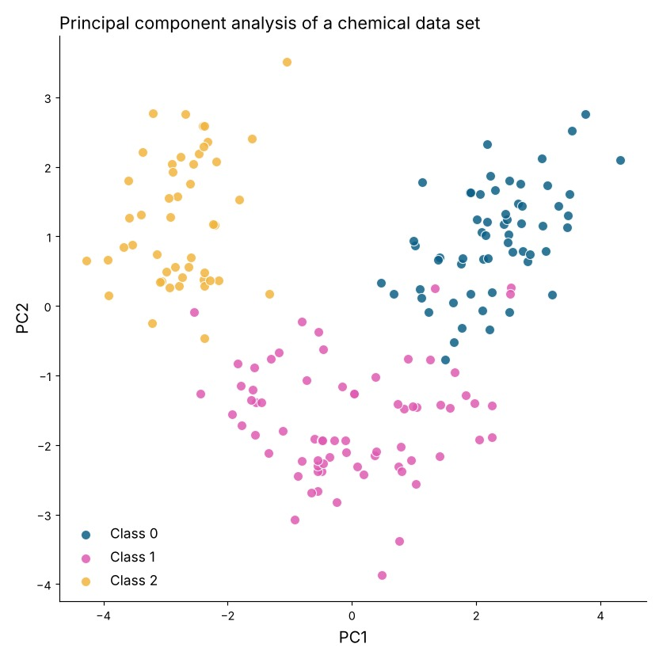

Introduction to Computational Chemistry with Artificial Intelligence
Learn to code, model molecules, and use the AI tools behind modern drug discovery. No programming experience required.

About the course
CHM 230 explores how computers, data science, and artificial intelligence are transforming modern chemistry. Students learn Python through hands-on work in chemical data analysis, molecular modeling, bioinformatics, cheminformatics, and machine learning, using a programming environment designed for second-year chemistry students with no prior coding experience. Calculus is not required.
The course is open to students pursuing a BS or BA in Chemistry or Biochemistry who have completed CHM 142. It meets in a hybrid format: the Tuesday lecture is online and synchronous, the Thursday laboratory is in person, and all materials are also posted for asynchronous access. Every lecture and lab runs in Google Colab, so nobody has to buy software or own a powerful computer.
New in Spring 2027: four AI modules in drug discovery
The second half of the course is built around the same kinds of tools used in pharmaceutical and biotechnology research. Students also learn to check what those tools produce against physics-based calculation and experimental data.
Throughout, students examine the limits of AI in the molecular sciences and see how these methods are used in careers across industry and healthcare.
Workshop with Prof. Emilio Gallicchio, Brooklyn College
In Week 12 (early May), CHM 230 joins a half-day, hands-on workshop led by Prof. Emilio Gallicchio and the Computational Molecular Biophysics Laboratory at CUNY Brooklyn College. Students work with AI-predicted protein-drug complexes and use AI-assisted scripting to set up binding free energy calculations, the methods his group develops for structure-based drug design.
The workshop is open to students and faculty from both campuses, so CSI students learn alongside peers and researchers from Brooklyn.
What you will learn
- Python fundamentals: arrays, strings, loops, functions, modules, and error handling
- Visualizing and analyzing chemical data with Matplotlib, NumPy, Pandas, and Seaborn
- Supervised and unsupervised machine learning on chemical data
- Cheminformatics with SMILES and RDKit
- Bioinformatics, molecular modeling, and AI structure prediction
- Docking, virtual screening, and generative design
- Using AI tools responsibly, and verifying their output
Course details
| Course | CHM 230-01 (27358), lecture CHM 230-01L1 (27359), laboratory |
| Instructor | Prof. Sharon Loverde Sharon.Loverde@csi.cuny.edu Office 6S-238 · 718-982-4075 |
| Dates | January 28 to May 27, 2027 |
| Assessment | Lab reports 40%, midterm 30%, final project or presentation 30% |
| Textbook | Scientific Computing for Chemists with Python (free online) |